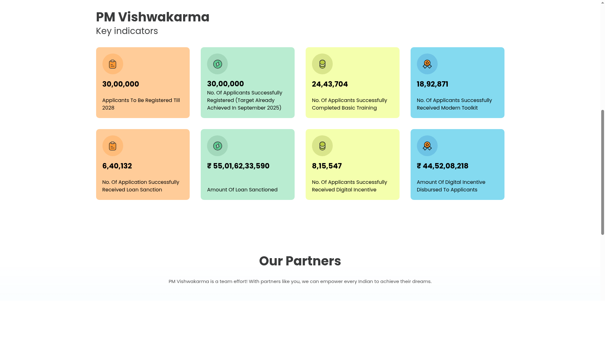

PM Vishwakarma: toolkit support and training stipend
The toolkit incentive of up to Rs 15,000 and the Rs 500-per-day training stipend are real published benefits for eligible traditional artisans, including tailors. But this is not a cash giveaway or an automatic free sewing machine. We could not confirm that fresh registrations are currently being accepted.
The official portal says its 30 lakh registration target has already been achieved. A September 2026 PIB release confirms the target was reached. Existing-beneficiary training and toolkit delivery continue, but that does not prove a new applicant can join today. Ask an authorised CSC or MSME-DFO to confirm current intake for your trade and district first. We found no verified reopening notice.
What the two benefits actually mean
- Toolkit: up to Rs 15,000 through an e-voucher. This is support for the improved tools prescribed for your trade, not unrestricted cash deposited to buy any machine you choose. The official FAQ links eligibility to skill verification at the start of basic training. Follow the current approved toolkit and delivery process.
- Training stipend: Rs 500 per eligible training day. Basic training is generally 5-7 days, with advanced training of 15 days or more for interested beneficiaries. Guidelines say the stipend is paid to the bank account through DBT after training completion and certification. It is not Rs 500 every day indefinitely.
SIDBI describes e-RUPI vouchers being issued on the registered mobile number after basic training and redeemed against the selected toolkit delivered through India Post. The guideline/FAQ wording describes eligibility at the start of training, while actual issue/delivery can follow training. Do not assume an immediate payment or guaranteed delivery date.
Who is this for?
The scheme covers artisans and craftspeople already working with their hands and tools in one of 18 notified family-based traditional trades, in the unorganised sector on a self-employment basis. Tailor (Darzi) is included. It is not open to everyone who would like to start sewing.
- At least 18 years old on registration.
- Already engaged in the eligible trade on the registration date.
- One beneficiary per family, defined as husband, wife and unmarried children.
- Government employees and their family members are excluded.
- Restrictions apply to similar government self-employment/business credit schemes in the previous five years. The guidelines allow fully repaid MUDRA/PM SVANidhi borrowers; confirm your exact history with the official authority.
Kerala is included in implementation, not excluded as a state. A Lok Sabha answer dated 30 July 2026 reports 22,344 registered artisans, 13,805 basic-training beneficiaries and 6,950 toolkit deliveries in Kerala. Those are historical totals, not available places or a promise of new admission today.
The interest-bearing loan is not covered or recommended
This explainer covers only toolkit support and the training stipend. The scheme also has interest-bearing credit, which is a repayable loan, not a grant. AiCoN does not recommend that component. We removed the previous version's loan-application suggestion.
We have not verified a current registration screen proving that a beneficiary can always complete the process without credit consent. Ask the CSC/MSME office to confirm a non-loan route before proceeding. Do not sign or approve a loan application, mandate or credit agreement merely to obtain tools or training.
How to check or proceed safely
- Read the official portal and FAQ. Confirm whether fresh intake is available for your district and trade.
- If intake is confirmed, use an authorised Common Service Centre. Registration is free. The official procedure uses Aadhaar-based biometric authentication and three-stage verification.
- Have Aadhaar, mobile, bank-account and ration-card details ready, following the current official checklist. Do not send these to unofficial agents or share OTPs with callers.
- Approval requires local-body verification, District Implementation Committee vetting and Screening Committee approval. Registration alone does not guarantee benefits.
- Already registered? Use the official beneficiary route or contact your CSC/training centre/MSME-DFO about training, certification, voucher issue, delivery or delayed stipend. Save your application details and confirmations.
AiCoN did not register a person, authenticate Aadhaar, enter a beneficiary account or test a payment. We cannot confirm an individual application's position, a new seat or a stipend-credit date.
Payment status and recovery checks
On 16 November, the live portal showed 18,92,871 applicants had received modern toolkits. PIB also reported substantial toolkit deliveries in September. This supports continuing delivery to registered beneficiaries, not a claim that every stipend is paid on time. We did not find a current public reconciliation of all pending training stipends.
We searched the complete downloaded DC-MSME implementation guidelines, including annexures, and found no clause charging interest on recovery of toolkit/stipend support. That is a limited document check, not a guarantee that no later sanction terms or fraud-recovery rules apply. The portal links a newer v30 PDF, but its complete download was not retrievable during this check. Read current declarations and benefit-specific conditions before accepting support. Loan interest and loan penalties remain outside this guide.
Official dashboard evidence

Sources and verification limits
- Official portal and dashboard; official FAQ; registration guidance.
- DC-MSME implementation guidelines (complete downloaded copy); newer portal-linked v30 guidelines (partial text checked; complete download unavailable).
- PIB, 16 September 2026: target reached and delivery progress.
- Lok Sabha, 30 July 2026: state-wise implementation figures.
- SIDBI: voucher and delivery process.
- TOI, 29 August 2026: registrations yet to resume. This report is dated, not proof of today's intake.
Checked 16 November 2026. Explainer by AiCoN - not a government publication. No new application or payment was tested.
പിഎം വിശ്വകർമ: ടൂൾകിറ്റ് സഹായവും പരിശീലന സ്റ്റൈപ്പൻഡും
അർഹരായ പരമ്പരാഗത കൈത്തൊഴിലാളികൾക്ക് പരമാവധി 15,000 രൂപയുടെ ടൂൾകിറ്റ് സഹായവും പരിശീലന ദിവസത്തിന് 500 രൂപ സ്റ്റൈപ്പൻഡും പദ്ധതിയിലുണ്ട്. തയ്യൽ തൊഴിലാളികളും ഉൾപ്പെടുന്നു. എന്നാൽ ഇത് എല്ലാവർക്കും പണമോ സൗജന്യ തയ്യൽ മെഷീനോ നൽകുന്ന പദ്ധതിയല്ല. പുതിയ രജിസ്ട്രേഷൻ ഇപ്പോൾ സ്വീകരിക്കുന്നുണ്ടെന്ന് സ്ഥിരീകരിക്കാനായിട്ടില്ല.
30 ലക്ഷം പേരുടെ രജിസ്ട്രേഷൻ ലക്ഷ്യം പൂർത്തിയായെന്ന് ഔദ്യോഗിക പോർട്ടൽ പറയുന്നു. 2026 സെപ്റ്റംബറിലെ PIB അറിയിപ്പും ഇത് സ്ഥിരീകരിക്കുന്നു. നേരത്തെ രജിസ്റ്റർ ചെയ്തവർക്ക് പരിശീലനവും ടൂൾകിറ്റ് വിതരണവും നടക്കുന്നത് പുതിയ അപേക്ഷകൾ സ്വീകരിക്കുന്നു എന്നതിന് തെളിവല്ല. നിങ്ങളുടെ ജില്ലയിലും തൊഴിൽ വിഭാഗത്തിലും പുതിയ രജിസ്ട്രേഷൻ സാധ്യമാണോ എന്ന് അംഗീകൃത CSC അല്ലെങ്കിൽ MSME-DFO ഓഫീസിൽ ആദ്യം അന്വേഷിക്കുക. വീണ്ടും തുറന്നതായി സ്ഥിരീകരിച്ച അറിയിപ്പ് കണ്ടെത്തിയിട്ടില്ല.
ആനുകൂല്യങ്ങൾ എന്താണ്?
- ടൂൾകിറ്റിന് പരമാവധി 15,000 രൂപയുടെ ഇ-വൗച്ചർ. തൊഴിലിനായി നിർദേശിച്ച മെച്ചപ്പെട്ട ഉപകരണങ്ങൾക്കുള്ള സഹായമാണിത്. ഇഷ്ടമുള്ള ഏത് മെഷീനും വാങ്ങാൻ ബാങ്കിൽ ലഭിക്കുന്ന പണമല്ല. അടിസ്ഥാന പരിശീലനത്തിന്റെ തുടക്കത്തിലെ നൈപുണ്യ പരിശോധനയുമായി അർഹത ബന്ധപ്പെട്ടിരിക്കുന്നു.
- അർഹമായ പരിശീലന ദിവസത്തിന് 500 രൂപ. അടിസ്ഥാന പരിശീലനം സാധാരണ 5-7 ദിവസം. താൽപര്യമുള്ളവർക്ക് 15 ദിവസമോ അതിലധികമോ നീളുന്ന തുടർപരിശീലനവുമുണ്ട്. പരിശീലനവും സർട്ടിഫിക്കേഷനും പൂർത്തിയാക്കിയ ശേഷം DBT വഴിയാണ് സ്റ്റൈപ്പൻഡ് നൽകുന്നതെന്ന് മാർഗനിർദേശങ്ങൾ പറയുന്നു. എല്ലാ ദിവസവും തുടർച്ചയായി 500 രൂപ ലഭിക്കില്ല.
അടിസ്ഥാന പരിശീലനത്തിനു ശേഷം രജിസ്റ്റർ ചെയ്ത മൊബൈൽ നമ്പറിൽ ഇ-റുപ്പി വൗച്ചർ നൽകുകയും തിരഞ്ഞെടുത്ത ടൂൾകിറ്റ് ഇന്ത്യ പോസ്റ്റ് വഴി എത്തിക്കുമ്പോൾ ഉപയോഗിക്കുകയും ചെയ്യുന്നതായി SIDBI വിശദീകരിക്കുന്നു. അർഹതയും വൗച്ചർ ലഭിക്കുന്നതും ഉപകരണ വിതരണം നടക്കുന്നതും ഒരേ സമയമാകണമെന്നില്ല. ഉടൻ പണമോ നിശ്ചിത ദിവസത്തിൽ വിതരണമോ ഉറപ്പായി കരുതരുത്.
ആർക്കാണ് അർഹത?
അസംഘടിത മേഖലയിൽ സ്വയംതൊഴിലായി കൈകളും ഉപകരണങ്ങളും ഉപയോഗിച്ച് നിലവിൽ ജോലി ചെയ്യുന്ന പരമ്പരാഗത കൈത്തൊഴിലാളികൾക്കാണ് പദ്ധതി. അറിയിപ്പിലുള്ള 18 തൊഴിൽ വിഭാഗങ്ങളിൽ തയ്യൽക്കാരൻ (Darzi) ഉൾപ്പെടുന്നു. തയ്യൽ പഠിച്ച് തുടങ്ങാൻ ആഗ്രഹിക്കുന്ന എല്ലാവർക്കുമുള്ള പദ്ധതിയല്ല.
- രജിസ്ട്രേഷൻ സമയത്ത് 18 വയസ്സ് പൂർത്തിയായിരിക്കണം.
- അർഹമായ തൊഴിൽ നിലവിൽ ചെയ്യുന്ന ആളായിരിക്കണം.
- ഒരു കുടുംബത്തിൽ ഒരാൾക്ക് മാത്രം. ഭർത്താവ്, ഭാര്യ, അവിവാഹിതരായ മക്കൾ എന്നിവരാണ് കുടുംബം.
- സർക്കാർ ജീവനക്കാരും അവരുടെ കുടുംബാംഗങ്ങളും അർഹരല്ല.
- കഴിഞ്ഞ അഞ്ച് വർഷത്തെ സമാന സർക്കാർ സ്വയംതൊഴിൽ/സംരംഭ വായ്പകൾക്ക് നിയന്ത്രണങ്ങളുണ്ട്. പൂർണമായി തിരിച്ചടച്ച MUDRA/PM SVANidhi വായ്പകൾക്ക് മാർഗനിർദേശത്തിൽ ഇളവുണ്ട്. സ്വന്തം സാഹചര്യം ഔദ്യോഗിക കേന്ദ്രത്തിൽ സ്ഥിരീകരിക്കുക.
കേരളവും പദ്ധതി നടപ്പിലാക്കുന്ന സംസ്ഥാനങ്ങളിൽ ഉൾപ്പെടുന്നു. 2026 ജൂലൈ 30-ലെ ലോക്സഭാ മറുപടിയിൽ കേരളത്തിൽ 22,344 രജിസ്ട്രേഷനുകളും 13,805 അടിസ്ഥാന പരിശീലന ഗുണഭോക്താക്കളും 6,950 ടൂൾകിറ്റ് വിതരണങ്ങളും രേഖപ്പെടുത്തിയിട്ടുണ്ട്. ഇവ മുൻകാല കണക്കുകളാണ്; ഇപ്പോൾ പുതിയ സീറ്റ് ലഭ്യമാണെന്നോ അപേക്ഷ സ്വീകരിക്കുമെന്നോ ഉള്ള ഉറപ്പല്ല.
പലിശയുള്ള വായ്പ ഇവിടെ ഉൾപ്പെടുത്തുകയോ ശുപാർശ ചെയ്യുകയോ ചെയ്യുന്നില്ല
ഈ വിശദീകരണം ടൂൾകിറ്റ് സഹായവും പരിശീലന സ്റ്റൈപ്പൻഡും മാത്രം പരിചയപ്പെടുത്തുന്നു. പദ്ധതിയിലെ മറ്റൊരു ഘടകമായ വായ്പയ്ക്ക് പലിശയുണ്ട്; അത് തിരിച്ചടക്കേണ്ട കടമാണ്, ഗ്രാന്റല്ല. ആ ഘടകം AiCoN ശുപാർശ ചെയ്യുന്നില്ല. പഴയ ലേഖനത്തിലെ വായ്പയ്ക്ക് അപേക്ഷിക്കാനുള്ള നിർദേശം നീക്കി.
വായ്പയ്ക്ക് സമ്മതിക്കാതെ എല്ലാ രജിസ്ട്രേഷൻ നടപടികളും പൂർത്തിയാക്കാമെന്ന് തെളിയിക്കുന്ന നിലവിലെ ഫോം പരിശോധിക്കാൻ കഴിഞ്ഞിട്ടില്ല. വായ്പയില്ലാത്ത വഴി ലഭ്യമാണോ എന്ന് CSC/MSME ഓഫീസിൽ ആദ്യം ഉറപ്പാക്കുക. ഉപകരണങ്ങളോ പരിശീലനമോ ലഭിക്കാനായി വായ്പാ അപേക്ഷ, മാൻഡേറ്റ്, ക്രെഡിറ്റ് കരാർ എന്നിവ അംഗീകരിക്കരുത്.
സുരക്ഷിതമായി പരിശോധിക്കേണ്ട വിധം
- ഔദ്യോഗിക പോർട്ടലും FAQ-യും വായിക്കുക. ജില്ലയിലും തൊഴിൽ വിഭാഗത്തിലും പുതിയ രജിസ്ട്രേഷൻ തുറന്നിട്ടുണ്ടോ എന്ന് അന്വേഷിക്കുക.
- തുറന്നിട്ടുണ്ടെന്ന് സ്ഥിരീകരിച്ചാൽ അംഗീകൃത CSC ഉപയോഗിക്കുക. രജിസ്ട്രേഷൻ സൗജന്യമാണ്. ആധാർ ബയോമെട്രിക് പരിശോധനയും മൂന്ന് ഘട്ട സ്ഥിരീകരണവുമുണ്ട്.
- നിലവിലെ ഔദ്യോഗിക പട്ടികപ്രകാരം ആധാർ, മൊബൈൽ, ബാങ്ക് അക്കൗണ്ട്, റേഷൻ കാർഡ് വിവരങ്ങൾ തയ്യാറാക്കുക. അനൗദ്യോഗിക ഏജന്റുമാർക്ക് രേഖകളോ വിളിക്കുന്നവർക്ക് OTP-യോ നൽകരുത്.
- തദ്ദേശസ്ഥാപന പരിശോധന, ജില്ലാ സമിതിയുടെ വിലയിരുത്തൽ, സ്ക്രീനിങ് സമിതിയുടെ അംഗീകാരം എന്നിവ ആവശ്യമാണ്. രജിസ്ട്രേഷൻ മാത്രം ആനുകൂല്യം ഉറപ്പാക്കില്ല.
- നേരത്തെ രജിസ്റ്റർ ചെയ്തവർ പരിശീലനം, സർട്ടിഫിക്കറ്റ്, വൗച്ചർ, വിതരണം, വൈകുന്ന സ്റ്റൈപ്പൻഡ് എന്നിവയ്ക്ക് ഔദ്യോഗിക ഗുണഭോക്തൃ സംവിധാനം അല്ലെങ്കിൽ CSC/പരിശീലനകേന്ദ്രം/MSME-DFO ഉപയോഗിക്കുക. അപേക്ഷാ വിവരങ്ങളും സ്ഥിരീകരണങ്ങളും സൂക്ഷിക്കുക.
AiCoN ആരെയും രജിസ്റ്റർ ചെയ്തിട്ടില്ല; ആധാർ സ്ഥിരീകരിക്കുകയോ ഗുണഭോക്താവിന്റെ അക്കൗണ്ടിൽ പ്രവേശിക്കുകയോ പണം ലഭിക്കുന്നുണ്ടോ എന്ന് പരിശോധിക്കുകയോ ചെയ്തിട്ടില്ല. വ്യക്തിഗത അപേക്ഷയുടെ നിലയോ പുതിയ സീറ്റോ പണം ലഭിക്കുന്ന തീയതിയോ ഉറപ്പുനൽകാനാവില്ല.
വിതരണനിലയും തിരിച്ചുപിടിക്കൽ വ്യവസ്ഥകളും
നവംബർ 16-ന് ഔദ്യോഗിക പോർട്ടലിൽ 18,92,871 പേർക്ക് ആധുനിക ടൂൾകിറ്റ് ലഭിച്ചതായി കാണിച്ചു. സെപ്റ്റംബറിലെ PIB അറിയിപ്പിലും വലിയ തോതിലുള്ള വിതരണം രേഖപ്പെടുത്തിയിട്ടുണ്ട്. ഇത് രജിസ്റ്റർ ചെയ്തവർക്ക് വിതരണം തുടരുന്നതിന്റെ തെളിവാണ്; എല്ലാവർക്കും സ്റ്റൈപ്പൻഡ് സമയത്ത് ലഭിച്ചു എന്നതിനല്ല. കുടിശ്ശികയുള്ള എല്ലാ പരിശീലന സ്റ്റൈപ്പൻഡുകളുടെയും നിലവിലെ സമ്പൂർണ പൊതുകണക്ക് കണ്ടെത്തിയിട്ടില്ല.
അനുബന്ധങ്ങളടക്കം ഡൗൺലോഡ് ചെയ്ത DC-MSME മാർഗനിർദേശങ്ങളിൽ ടൂൾകിറ്റ്/സ്റ്റൈപ്പൻഡ് തിരിച്ചുപിടിക്കുമ്പോൾ പലിശ ഈടാക്കുന്ന വ്യവസ്ഥ കണ്ടെത്തിയില്ല. ഇത് ആ രേഖയുടെ പരിമിതമായ പരിശോധന മാത്രമാണ്. പിന്നീടുള്ള അനുവദിക്കൽ നിബന്ധനകളോ തെറ്റായ വിവരങ്ങൾ നൽകിയതുമായി ബന്ധപ്പെട്ട വീണ്ടെടുക്കൽ ചട്ടങ്ങളോ ഇല്ലെന്ന ഉറപ്പല്ല. പോർട്ടൽ ലിങ്ക് ചെയ്യുന്ന പുതിയ v30 PDF പൂർണമായി ഡൗൺലോഡ് ചെയ്യാനായില്ല. ആനുകൂല്യം സ്വീകരിക്കുന്നതിന് മുമ്പ് നിലവിലെ സത്യവാങ്മൂലങ്ങളും നിബന്ധനകളും വായിക്കുക. വായ്പയുടെ പലിശയും പിഴകളും ഈ ഗൈഡിന്റെ പരിധിയിൽപ്പെടുന്നില്ല.
ഔദ്യോഗിക ഡാഷ്ബോർഡ് തെളിവ്
സ്രോതസ്സുകളും പരിശോധനയുടെ പരിധിയും
- Official portal and dashboard; official FAQ; registration guidance.
- DC-MSME implementation guidelines (complete downloaded copy); newer portal-linked v30 guidelines (partial text checked; complete download unavailable).
- PIB, 16 September 2026: target reached and delivery progress.
- Lok Sabha, 30 July 2026: state-wise implementation figures.
- SIDBI: voucher and delivery process.
- TOI, 29 August 2026: registrations yet to resume. This report is dated, not proof of today's intake.
പരിശോധിച്ചത്: 16 നവംബർ 2026. AiCoN തയ്യാറാക്കിയ വിശദീകരണം; സർക്കാർ പ്രസിദ്ധീകരണമല്ല. പുതിയ അപേക്ഷയോ പണമടയ്ക്കലോ പരീക്ഷിച്ചിട്ടില്ല.